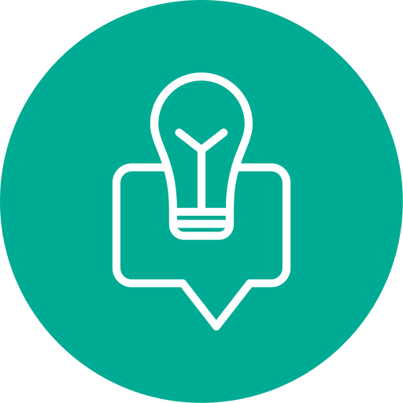

🚧 Your feedback and suggestions are welcome 🚧
Getting Started
Welcome to The Mastery Equation!
This website is dedicated to helping Civil Service exam takers, especially those aiming to master Numerical Reasoning.
Here, you'll find step-by-step lessons, practical strategies, and targeted exercises designed to build your confidence and accuracy in solving numerical problems.
Whether you're just starting your review or refining your test-taking skills, the goal of this platform is to provide clear, concise, and effective learning resources that can help you achieve your best possible score.
The content is carefully structured to mirror the real exam style — ensuring your preparation is both focused and realistic.
 About Me
About Me
In March 2025, I successfully passed the Professional Civil Service Examination, earning a general rating of 92.89 and a remarkable 98.95 in Numerical Reasoning.
My journey taught me the value of smart preparation, consistency, and effective study strategies — lessons I now share through this website.
I created this platform to help others overcome exam anxiety, master difficult topics, and approach the Civil Service Exam with confidence.
Here, I share my personal techniques, study schedules, and strategies that helped me achieve my score — so you can adapt them to your own learning style.
 Contact Me
Contact Me
Email: arizakimjune.evsudc@gmail.com
Tips and Strategies
Tip 1: Know the Exam Inside Out
Before you dive into preparation, understand the full scope of the Civil Service Exam—its parts, topic areas, number of items per section, and time constraints. Familiarity with the exam layout allows you to plan your review strategically and reduce surprises on test day.
Tip 2: Identify Your Strengths and Weaknesses
Once you're clear about the structure, evaluate which topics you handle well and which ones trip you up. Prioritize your weaker areas first, but continue practicing your strengths to keep your overall performance balanced and confident.
Tip 3: Master Fast Basic Math
Strong numerical skills start with a solid foundation in basic operations — addition, subtraction, multiplication, and division. The Civil Service Exam is time-bound, so speed and accuracy are equally important.
Tip 4: Learn Useful Shortcuts
After mastering the fundamentals, learn speed-enhancing strategies like mental math tricks, estimation techniques, and logical shortcuts. These methods help you arrive at correct answers faster and save valuable time during the exam.
Tip 5: Make Problem-Solving a Daily Habit
Success in numerical reasoning doesn't come from cramming—it grows through consistency. Solve problems regularly, 5-10 each day—to reinforce recall, sharpen logic, and reduce uncertainty under timed conditions.
Tip 6: Read Questions Carefully
Take a moment to fully understand what a question is asking before rushing in. Misreading key details can lead to avoidable mistakes.
Tip 7: Estimate to Narrow Down Options
In multiple-choice tests, close-enough is often enough. Estimate and eliminate obviously wrong choices to reach the right answer more quickly
Tip 8: Time Management is Crucial
Know your pacing: for example, if you have 30 questions and 20 minutes, that's less than a minute per question. Skip tough ones temporarily and revisit if time allows
Tip 9: Practice Mental Math and Data Interpretation
Spend time improving your mental math, especially with fractions, ratios, and data charts. Familiarity with charts and tables boosts speed and comprehension
Tip 10: Practice, Practice, Practice
The Civil Service Exam demands more than just reading—you need consistent, hands-on practice to build speed, accuracy, and confidence. Work on all subject areas daily, starting with untimed sessions to focus on accuracy, then gradually adding time limits to mimic the real exam. The more you practice, the more natural problem-solving becomes, making you faster and more prepared on test day.
📖 Lesson 1
This is the first lesson.
📖 Lesson 2
This is the second lesson.
📖 Lesson 3
This is the third lesson.
✏️ Practice
Practice problems and exercises will be available here to test your understanding.
✅ Answer Key
Check your answers.
📋 Resources
Additional reading materials, videos, and references will be listed here.